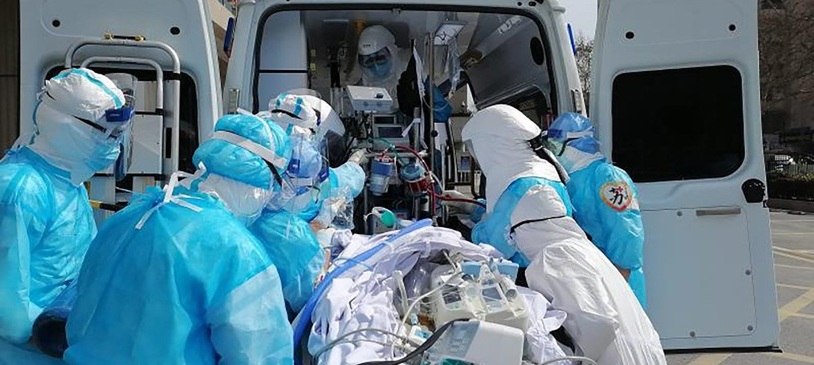
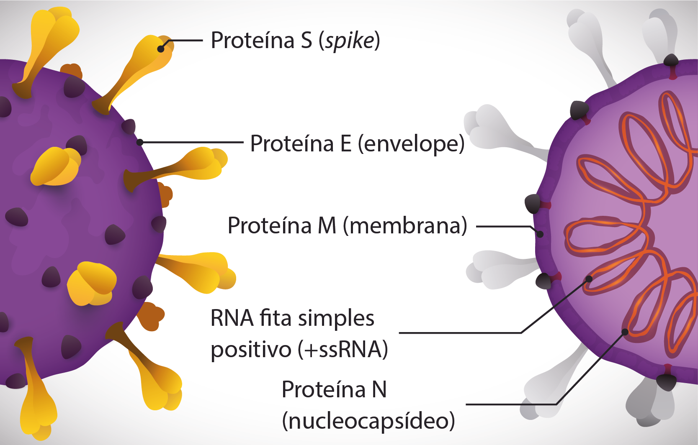

O surgimento do novo coronavírus fez com que cientistas e instituições de saúde em todo mundo tentassem desenvolver uma vacina eficiente e segura o mais rápido possível, é equivocado imaginar que esse trabalho começou no início da pandemia, já que sua produção é um trabalho de pelo menos 20 anos.
A tecnologia para combater a Síndrome Respiratória Aguda Grave (SARS) já estava em andamento em 2003, quando aconteceu o primeiro surto global envolvendo um coronavírus, reaparecendo em 2012 no Oriente Médio. O nome deriva-se de "coroa", pois ao ser visto em microscópio, parece ter uma coroa ou halo.
O imunizante chegou em nossas mãos de forma rápida, questão de meses, isso foi motivo de preocupação para alguns, por mais que especialistas já tenham deixado claro que são seguras e não existe nenhum motivo para preocupar-se. Quando o SARS-CoV-2(vírus da Covid-19) surgiu, a tecnologia para enfrentar o coronavírus já existia. O que os cientistas precisaram fazer foi adaptar a vacina para combater o novo vírus, no qual possui uma proteína chamada Spike (proteína S) diferente dos coronavírus anteriores.
A pandemia também foi capaz de acelerar o avanço da tecnologia na área da saúde, não só na construção da vacina como em outros tópicos, tais como: